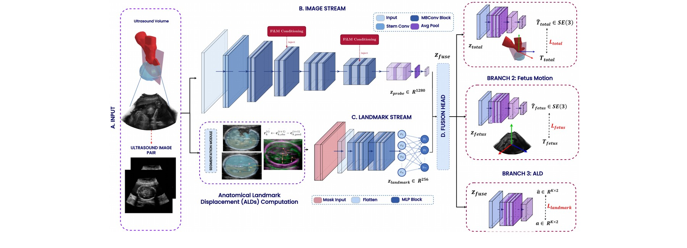
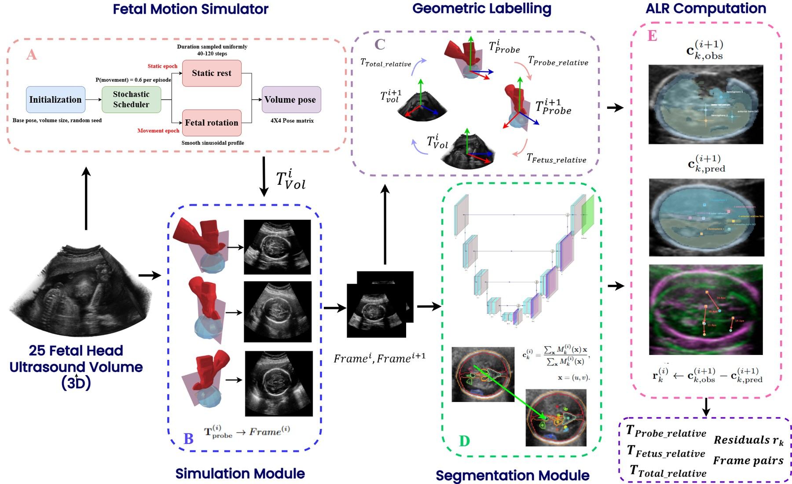
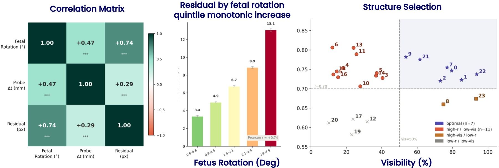
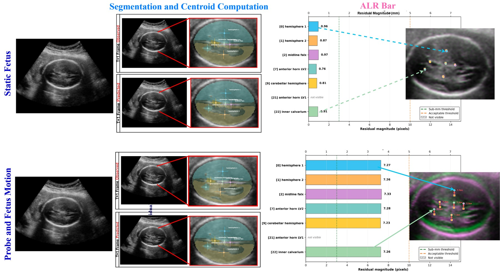
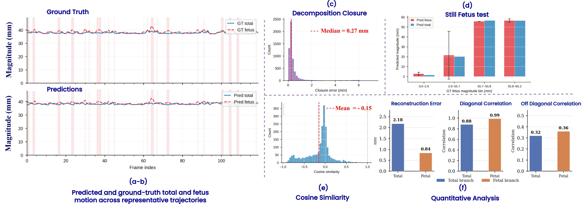
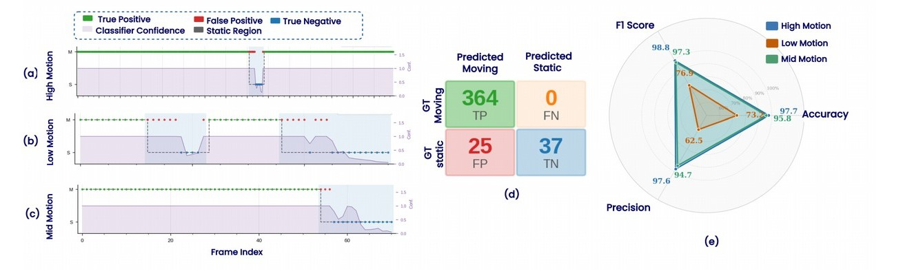

Preprint · Built on the FLAME-US dataset engineering framework
1Department of Electrical Engineering, IIT Madras (IITM), India
2Healthcare Technology Innovation Centre (HTIC), IITM, India
3Sudha Gopalakrishnan Brain Centre, IITM, India
4MediScan Systems, Chennai, India
⋆Equal contribution
Fetal movement is an important indicator of fetal well-being and underpins routine obstetric ultrasound (US) tasks such as biometric assessment and standard-plane acquisition. Accurate motion estimation is therefore essential for both clinical analysis and autonomous US systems. However, anatomical changes observed in freehand US image sequences arise from the combined effects of fetal and probe motion, creating a motion ambiguity that makes fetal-motion estimation inherently ill-posed. To address this challenge, we introduce FetalSense, a framework for disentangling fetal and probe motion from US image pairs. FetalSense is trained using simulation-derived SE(3) pose supervision for both the fetus and probe, while requiring only US images and tracked probe motion at inference. We further introduce Anatomical Landmark Displacements (ALDs), an image-derived signal of fetal motion based on temporal changes in fetal anatomy, thereby providing supervision without requiring fetal-pose measurements at deployment. FetalSense combines a probe-pose-conditioned image encoder with an ALD-guided landmark stream to enable explicit motion decomposition. Evaluated on a large-scale fetal US motion dataset, FetalSense achieves a mean fetal displacement error of 1.56 mm and a decomposition closure error of 0.69 mm. The learned fetal-motion representation further supports motion-state classification, achieving 94.1% accuracy and 96.7% F1-score for significant fetal-movement detection. By jointly introducing fetal–probe motion disentanglement and ALDs as an image-derived motion cue, FetalSense establishes a foundation for motion-aware fetal US analysis and autonomous US navigation.
Mean fetal displacement error
Decomposition closure error
Motion-state accuracy / F1

Fig. 1: Overview of FetalSense. (A) Input. Consecutive ultrasound frames with probe-, fetal-, and total-motion labels, and Anatomical Landmark Displacements (ALDs). (B) Image Stream. A FiLM-conditioned EfficientNet extracts motion features from image pairs conditioned on probe motion. (C) Landmark Stream. A visibility-masked landmark encoder extracts anatomy-aware fetal-motion features from ALDs. (D) Fusion and Prediction Branches. Features are fused and decoded into total-motion, fetal-motion, and ALD predictions.
In freehand ultrasound, the observed motion between two frames is a superposition of two independent, entangled effects: probe motion across the maternal abdomen and fetal motion within the uterus. Probe motion is externally measurable via tracking, but fetal motion has no analogous sensor and must be inferred from the image itself. FetalSense addresses this by learning to decompose the two effects explicitly rather than treating apparent image motion as fetal motion alone.
Consecutive frames are stacked and encoded with an EfficientNet-B1 backbone. Tracked probe motion is injected at multiple stages via Feature-wise Linear Modulation (FiLM), so the visual embedding is explicitly conditioned on known probe displacement rather than having to infer it implicitly.
Anatomical Landmark Displacements (ALDs) are the residual shift between an observed landmark centroid and where that centroid would be if only probe motion had occurred. A visibility-masked MLP encodes these residuals into a compact, anatomy-aware fetal-motion embedding.
The probe-conditioned image embedding and the landmark embedding are fused and passed to dedicated total-motion, fetal-motion, and ALD heads, jointly optimized end-to-end. At inference, FetalSense needs only the image pair and tracked probe motion — fetal pose, which is unobservable in the clinic, is never required.
FetalSense is trained on data engineered by our companion dataset paper, FLAME-US: A Landmark-Guided Dataset for Quantitative Fetal Motion Analysis in Freehand Ultrasound, which supplies the disentangled fetal/probe SE(3) supervision and landmark-residual labels that make FetalSense's motion decomposition learnable in the first place.
📄 Read the full FLAME-US paper (PDF) →

FLAME-US dataset curation pipeline. (A) A clinically-grounded fetal motion simulator generates smooth, sinusoidal fetal head motion from expert sonographer feedback. (B) Probe trajectories are simulated over real 3-D fetal head US volumes to render 2-D frame sequences. (C) Relative fetal, probe, and combined SE(3) motion poses are derived from consecutive frame pairs. (D) A dual-head segmentation network extracts fetal head landmarks and their centroids. (E) Anatomical Landmark Residuals (ALRs) are computed as the discrepancy between probe-predicted and observed landmark locations, isolating motion caused by the fetus alone.
Ground-truth fetal pose is never observable in routine clinical scanning, so there was no way to directly supervise fetal-motion estimation. FLAME-US closes this gap by simulating independent, clinically plausible fetal and probe motion on top of 25 patient-derived 3-D fetal head volumes (19–21 gestational weeks), yielding frames with known ground-truth for both motion sources at once.

ALRs as an indicator of fetal head motion. Left: ALRs correlate strongly with fetal rotation (Pearson r = 0.74, p < 0.001) and only weakly with probe translation (r = 0.29). Centre: mean residual increases monotonically across fetal-rotation quintiles. Right: the seven high-visibility, motion-sensitive landmarks (hemispheres, midline falx, anterior horns of the lateral ventricles, inner/outer calvarium) selected for residual estimation.

Qualitative behaviour of Anatomical Landmark Residuals. When the fetus is static and only the probe moves, predicted and observed landmark positions coincide and residuals stay near-zero (top). When the fetus is also moving, residuals grow substantially across all retained landmarks (bottom), confirming that ALRs isolate fetal-specific motion rather than probe-induced appearance change.
Together, FLAME-US and FetalSense form a single pipeline: FLAME-US engineers the explicit fetal-motion supervision that clinical scanning cannot provide, and FetalSense learns from it to decompose fetal and probe motion using only images and tracked probe pose — the only inputs available at real deployment time.
FetalSense achieves the lowest fetal error, lowest closure error, and highest motion-state accuracy among all compared methods.
| Method | Fetal Error (mm) ↓ | Closure Error (mm) ↓ | Accuracy (%) ↑ |
|---|---|---|---|
| Image Stream only | 3.81 | 7.89 | 27.86 |
| LightGlue | 5.16 | 6.31 | 56.00 |
| CURL (fine-tuned) | 2.95 | 3.69 | 63.38 |
| RAFT + Probe Subtraction | 4.19 | 4.33 | 70.65 |
| FetalSense (Ours) | 1.56 | 0.69 | 94.12 |
Private pose heads give the largest single improvement; FiLM conditioning further reduces fetal error; the ALD loss is what resolves closure consistency.
| Configuration | F.E. (mm) | T.E. (mm) | C.E. (mm) | Cosine Sim. |
|---|---|---|---|---|
| Image Stream Only | 3.81 ± 2.8 | 2.7 ± 1.3 | 7.89 ± 5.9 | −0.19 |
| Dual Stream + Shared Branches | 3.35 ± 2.7 | 3.08 ± 1.6 | 7.58 ± 6.3 | −0.21 |
| Dual Stream + Private Branches | 1.95 ± 1.9 | 2.46 ± 1.6 | 4.27 ± 4.1 | −0.16 |
| + FiLM | 1.67 ± 1.1 | 1.75 ± 1.7 | 4.42 ± 4.6 | −0.23 |
| FetalSense (+ ALD loss, Ours) | 1.56 ± 1.8 | 1.77 ± 1.7 | 0.69 ± 1.4 | −0.15 |

Fig. 2: Motion decomposition analysis. (a–b) Total and fetal motion predictions versus ground truth. (c) Decomposition consistency (median closure error 0.27 mm). (d) Still-fetus predictions remain near-zero for the fetal branch. (e) Inter-branch cosine similarity indicates reduced coupling between branches. (f) Reconstruction and correlation metrics: median errors of 2.18 mm (total) and 0.84 mm (fetal).
The learned fetal-motion representation reliably flags moving vs. static fetal states — useful for autonomous US navigation, where probe-control decisions may need to adapt during fetal activity.

Fig. 3: Downstream motion-state classification. (a–c) Ground-truth and predicted states across representative high-, low-, and mid-motion trajectories — no false negatives observed. (d) Aggregate confusion matrix. (e) Per-trajectory classification performance: high- and mid-motion trajectories reach F1 scores of 98.8% and 97.3% respectively.
If you use FetalSense or the FLAME-US dataset, please cite both papers.
FetalSense
@inproceedings{balaji2026fetalsense,
title = {FetalSense: Anatomy-Guided Fetal--Probe Motion
Disentanglement in Freehand Ultrasound},
author = {Balaji, Sowjanya and A, Anusha and Ram, Keerthi and
Ayyasamy, Shyam and Seshadri, Suresh and
Lakshmanan, Manojkumar and Sivaprakasam, Mohanasankar},
booktitle = {Preprint},
year = {2026}
}FLAME-US (dataset)
@inproceedings{balaji2026flameus,
title = {FLAME-US: A Landmark-Guided Dataset for Quantitative
Fetal Motion Analysis in Freehand Ultrasound},
author = {Balaji, Sowjanya and A, Anusha and Ram, Keerthi and
Ayyasamy, Shyam and Lakshmanan, Manojkumar and
Sivaprakasam, Mohanasankar},
booktitle = {Preprint},
year = {2026}
}